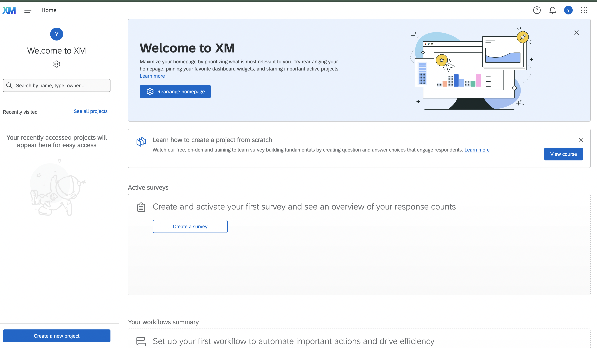

Week 2 Surveys and Survey Experiments with Qualtrics
This section is drafted based on Dr. Mark Hoffman’s previous SOC 10 lab notes.
2.1 Overview
In this week, we will go from using data that someone else collected to collecting data of our own using Qualtrics. Qualtrics makes collecting survey data online easy. If you have ever used something like Google Forms, it is, in many respects, quite similar, except that it is much more powerful. As you will see, we can quickly and easily build a survey experiment, administer the experiment, download the results, and import them into R. Let’s get started!
2.2 Creating a Qualtrics account
Stanford is kind enough to provide all of us with access to Qualtrics. Click here to get started.

Click on the “Set up a Qualtrics account” button and it will tell you to go to https://stanforduniversity.qualtrics.com. Go to that link!

There, it will ask if you have a preexisting Qualtrics account or not. Click the button that pertains to you. If you don’t have a preexisting account, it will either prompt you to log-in to your Stanford account via WebAuth, or else it will automatically log-in for you and set up your account if you are already logged in.
Now you should be into Qualtrics! Since you haven’t made a project previously, you only have one option: Create a new project (bottom left). Everytime you want to make a new survey you will click this button. We will make an example survey to show you the ropes.

It will bring you to a page with a bunch of options for creating a new survey. You can start from these pre-designed surveys if they fall in line with the kind of survey you want to run. There are even pre-built surveys for academics. For learning purposes though, we will start from scratch by clicking “From Scratch–Survey”.
Now it asks us to name our project. I called it First Survey.